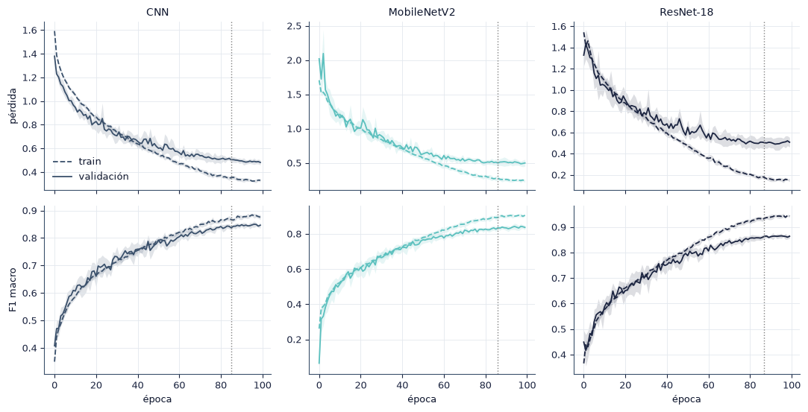
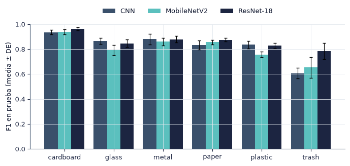
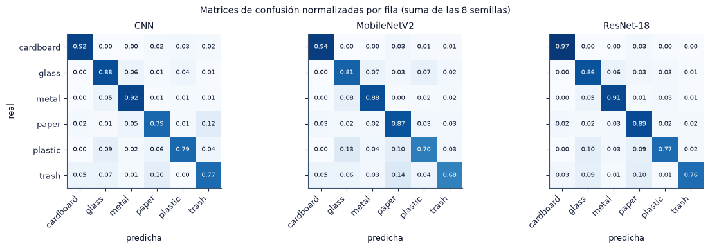
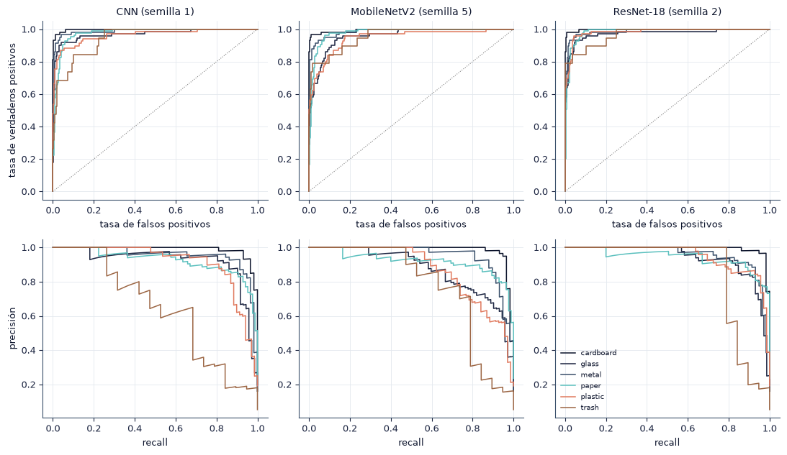
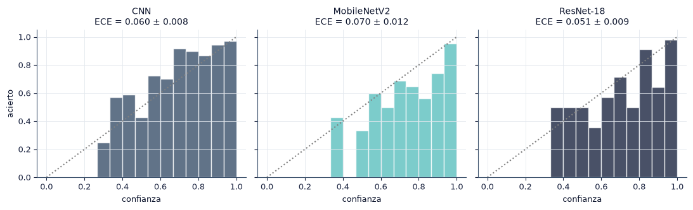
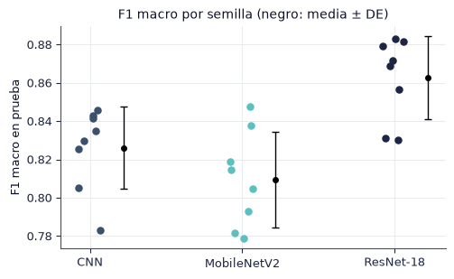
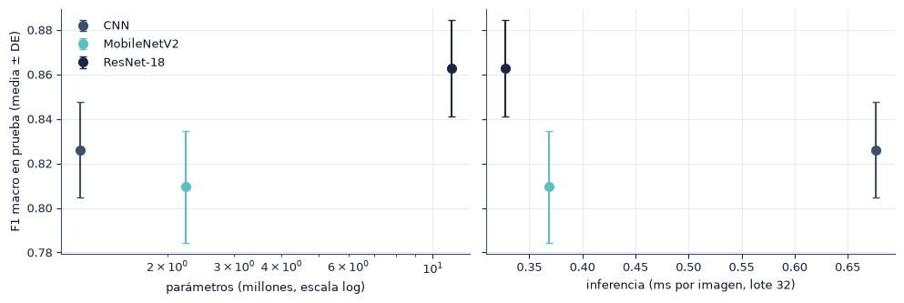

5.1 Resultados de los modelos base#
En esta sección presentamos el desempeño en prueba de los tres modelos con su variación entre semillas, las curvas de aprendizaje, el desempeño por clase, la calibración y el costo computacional.
import sys
from pathlib import Path
ROOT = next(p for p in [Path.cwd(), *Path.cwd().parents] if (p / "src" / "config.py").exists())
if str(ROOT) not in sys.path:
sys.path.insert(0, str(ROOT))
import numpy as np
import pandas as pd
import matplotlib.pyplot as plt
from IPython.display import Markdown, display
from src import config as C
from src import plots as P
from src.persist import is_done, load_pickle, save_pickle
P.setup()
C.ensure_dirs()
pd.set_option("display.precision", 4)
print("Resultados:", C.RESULTS.name, "| modelos:", ", ".join(C.MODELS))
Resultados: results | modelos: CNN, MobileNetV2, ResNet-18
from src.evaluate import collect_runs
from src.stats import mean_ci
R = load_pickle(C.COMMON / "power_analysis.pkl")["R_final"]
df = collect_runs(seeds=range(R))
completas = df.groupby("seed")["model"].nunique()
df = df[df["seed"].isin(completas[completas == len(C.MODELS)].index)].reset_index(drop=True)
save_pickle(df, C.SUMMARY / "metricas_por_corrida.pkl")
print(f"{df['seed'].nunique()} semillas completas por modelo ({len(df)} corridas)")
8 semillas completas por modelo (24 corridas)
Tabla 5.1#
Para cada modelo y métrica reportamos la media ± desviación estándar entre semillas y el intervalo de confianza del 95 % para la media, calculado con la distribución t de Student, \(\bar x \pm t_{0.975,\,R-1}\, s/\sqrt{R}\). Los intervalos bootstrap percentil (10 000 remuestreos de las semillas) se incluyen en tabla_5_1.csv; con pocas semillas tienden a ser más estrechos que los de t, por lo que usamos estos últimos como referencia.
METRICAS = {"f1_macro": "F1 macro", "accuracy": "Accuracy", "balanced_accuracy": "Balanced accuracy",
"f1_weighted": "F1 ponderado", "precision_macro": "Precisión macro", "recall_macro": "Recall macro",
"auc_roc_macro": "AUC-ROC macro", "auc_pr_macro": "AUC-PR macro", "mcc": "MCC", "ece": "ECE"}
larga = []
for m in C.MODELS:
g = df[df["model"] == m]
for k, nombre in METRICAS.items():
ci = mean_ci(g[k].to_numpy())
larga.append({"modelo": m, "métrica": nombre, "media": ci["media"], "DE": ci["de"], "n": ci["n"],
"IC t inf": ci["ic_t"][0], "IC t sup": ci["ic_t"][1],
"IC boot inf": ci["ic_boot"][0], "IC boot sup": ci["ic_boot"][1]})
larga = pd.DataFrame(larga)
fmt = larga.assign(celda=lambda t: t.apply(lambda r: f"{r['media']:.3f} ± {r['DE']:.3f} [{r['IC t inf']:.3f}, {r['IC t sup']:.3f}]", axis=1))
tabla = fmt.pivot(index="métrica", columns="modelo", values="celda").loc[list(METRICAS.values()), C.MODELS]
costo = df.groupby("model").agg(params=("params", "first"), gmacs=("gmacs", "first"), size_mb=("size_mb", "first"),
train_min=("train_time_s", lambda x: x.mean() / 60), epocas=("epochs_run", "mean"),
ms_img=("ms_per_image", "mean")).loc[C.MODELS]
filas_costo = pd.DataFrame({
"Parámetros": costo["params"].map(lambda v: f"{v / 1e6:.2f} M"),
"GMAC por imagen": costo["gmacs"].map(lambda v: f"{v:.2f}"),
"Tiempo de entrenamiento (min, media)": costo["train_min"].map(lambda v: f"{v:.1f}"),
"Épocas (media)": costo["epocas"].map(lambda v: f"{v:.1f}"),
"Inferencia (ms/imagen, lote 32)": costo["ms_img"].map(lambda v: f"{v:.3f}"),
}).T
tabla_5_1 = pd.concat([tabla, filas_costo])
tabla_5_1.columns.name = None
display(tabla_5_1)
def a_markdown(t):
cols = [""] + list(t.columns)
lineas = ["| " + " | ".join(cols) + " |", "|" + "---|" * len(cols)]
lineas += ["| " + " | ".join([str(i)] + [str(v) for v in r]) + " |" for i, r in t.iterrows()]
return "\n".join(lineas)
_ = save_pickle({"larga": larga, "formateada": tabla_5_1, "costo": costo}, C.SUMMARY / "tabla_5_1.pkl")
larga.to_csv(C.SUMMARY / "tabla_5_1.csv", index=False)
_ = (C.SUMMARY / "tabla_5_1.md").write_text("Media ± DE [IC 95 % t] sobre semillas.\n\n" + a_markdown(tabla_5_1), encoding="utf-8")
| CNN | MobileNetV2 | ResNet-18 | |
|---|---|---|---|
| F1 macro | 0.826 ± 0.022 [0.808, 0.844] | 0.809 ± 0.025 [0.789, 0.830] | 0.863 ± 0.022 [0.845, 0.881] |
| Accuracy | 0.849 ± 0.026 [0.828, 0.870] | 0.828 ± 0.020 [0.812, 0.844] | 0.871 ± 0.018 [0.856, 0.886] |
| Balanced accuracy | 0.846 ± 0.015 [0.833, 0.858] | 0.814 ± 0.023 [0.794, 0.833] | 0.861 ± 0.018 [0.845, 0.876] |
| F1 ponderado | 0.852 ± 0.026 [0.831, 0.874] | 0.828 ± 0.019 [0.811, 0.844] | 0.871 ± 0.018 [0.856, 0.885] |
| Precisión macro | 0.821 ± 0.021 [0.804, 0.838] | 0.810 ± 0.029 [0.786, 0.834] | 0.870 ± 0.027 [0.847, 0.892] |
| Recall macro | 0.846 ± 0.015 [0.833, 0.858] | 0.814 ± 0.023 [0.794, 0.833] | 0.861 ± 0.018 [0.845, 0.876] |
| AUC-ROC macro | 0.973 ± 0.005 [0.970, 0.977] | 0.968 ± 0.004 [0.965, 0.971] | 0.979 ± 0.003 [0.976, 0.982] |
| AUC-PR macro | 0.893 ± 0.015 [0.881, 0.905] | 0.889 ± 0.013 [0.878, 0.899] | 0.925 ± 0.010 [0.917, 0.934] |
| MCC | 0.817 ± 0.029 [0.793, 0.842] | 0.789 ± 0.024 [0.770, 0.809] | 0.842 ± 0.021 [0.824, 0.860] |
| ECE | 0.060 ± 0.008 [0.053, 0.067] | 0.070 ± 0.012 [0.060, 0.081] | 0.051 ± 0.009 [0.043, 0.059] |
| Parámetros | 1.17 M | 2.23 M | 11.18 M |
| GMAC por imagen | 2.59 | 0.30 | 1.81 |
| Tiempo de entrenamiento (min, media) | 8.4 | 8.5 | 8.3 |
| Épocas (media) | 94.5 | 96.1 | 97.2 |
| Inferencia (ms/imagen, lote 32) | 0.677 | 0.369 | 0.327 |
Celdas: media ± DE [IC 95 % t].
Curvas de aprendizaje#
La figura muestra la media ± DE entre semillas de la pérdida y del F1 macro en entrenamiento y validación. Por el early stopping, cada punto promedia las semillas activas en esa época; la línea vertical marca la época media del mejor modelo. La pérdida y el F1 de entrenamiento se miden con aumento de datos y dropout activos, por lo que no son directamente comparables con validación. Usamos la brecha entre ambos en la mejor época como indicador de sobreajuste.

brecha = []
for m in C.MODELS:
for s, h in hist[m].items():
b = int(np.argmax(h["val_f1_macro"]))
brecha.append({"modelo": m, "semilla": s, "mejor época": b, "F1 train": h["train_f1_macro"][b],
"F1 val": h["val_f1_macro"][b], "brecha train − val": h["train_f1_macro"][b] - h["val_f1_macro"][b]})
brecha = pd.DataFrame(brecha)
res_brecha = brecha.groupby("modelo")[["mejor época", "F1 train", "F1 val", "brecha train − val"]].agg(["mean", "std"]).loc[C.MODELS]
save_pickle(brecha, C.SUMMARY / "brecha_train_val.pkl")
display(res_brecha.round(3))
| mejor época | F1 train | F1 val | brecha train − val | |||||
|---|---|---|---|---|---|---|---|---|
| mean | std | mean | std | mean | std | mean | std | |
| modelo | ||||||||
| CNN | 84.875 | 17.250 | 0.861 | 0.038 | 0.851 | 0.019 | 0.011 | 0.024 |
| MobileNetV2 | 85.875 | 10.629 | 0.887 | 0.023 | 0.848 | 0.014 | 0.039 | 0.022 |
| ResNet-18 | 86.750 | 9.254 | 0.938 | 0.013 | 0.873 | 0.007 | 0.065 | 0.014 |
Desempeño por clase#


Curvas ROC y precisión-recall#
Para cada modelo usamos la semilla mediana, es decir, la semilla cuyo F1 macro en prueba es el más cercano a la mediana del modelo. Cada curva corresponde a una clase frente al resto.

Calibración#
El error de calibración esperado mide la diferencia entre la confianza del modelo y su acierto:
con las predicciones agrupadas en 15 intervalos de confianza. En un modelo bien calibrado, las barras del diagrama de fiabilidad coinciden con la diagonal.

Descomposición de la varianza#
Mediante un ANOVA de un factor (modelo), con las semillas como réplicas, estimamos qué proporción de la variación del F1 macro se debe a la arquitectura (\(\eta^2 = SS_{entre}/SS_{total}\)) y la correlación intraclase ICC(1). El análisis pareado por semilla se presenta en la sección 5.2.
| valor | |
|---|---|
| F | 11.4989 |
| p | 0.0004 |
| eta² | 0.5227 |
| ICC(1) | 0.5675 |
| gl | (2, 21) |

Desempeño frente a costo#

Síntesis. ResNet-18 obtiene el mayor F1 macro medio en prueba (0.863) y MobileNetV2 el menor (0.809); la diferencia es 0.053. La arquitectura explica el 52 % de la varianza del F1 macro entre corridas. La clase con menor F1 promedio es trash. La mayor brecha train − val en la mejor época la tiene ResNet-18 (0.065).
Conclusión#
La Tabla 5.1 resume el desempeño de los tres modelos con su variación entre semillas, y las figuras muestran la distribución de los errores por clase, la calibración y el costo de cada modelo. La significancia y la relevancia práctica de las diferencias se evalúan en la sección 5.2.